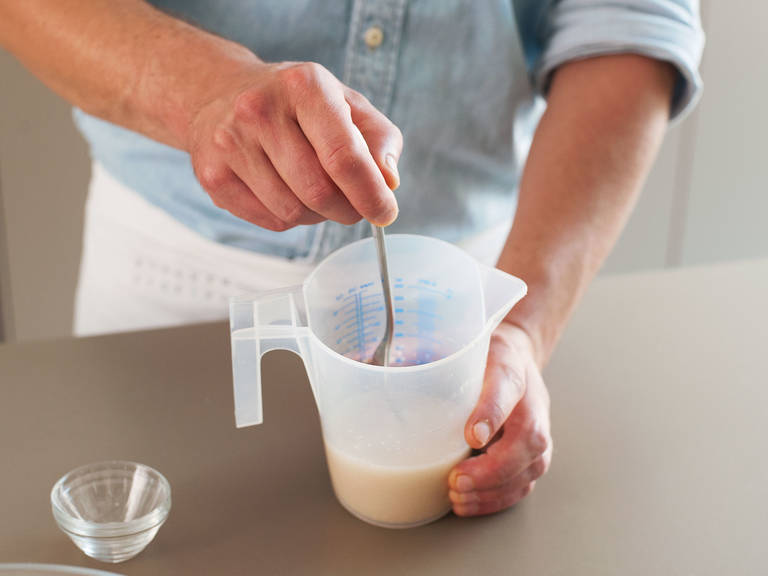
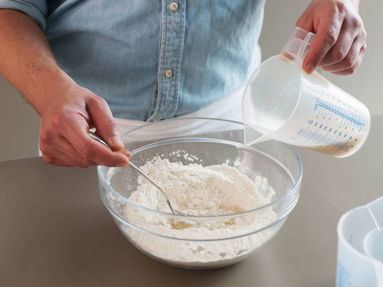
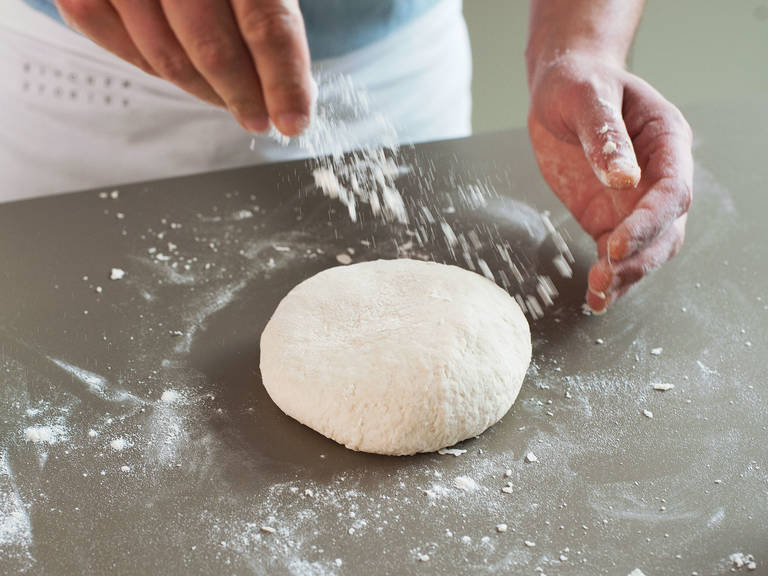
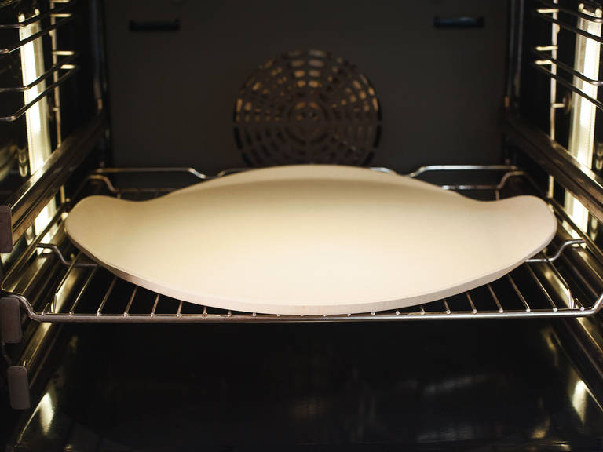
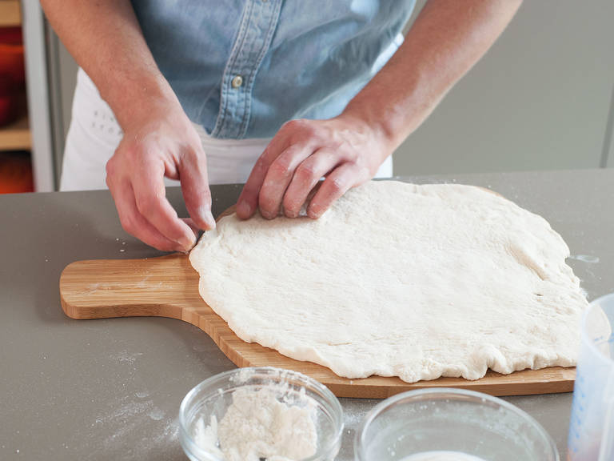
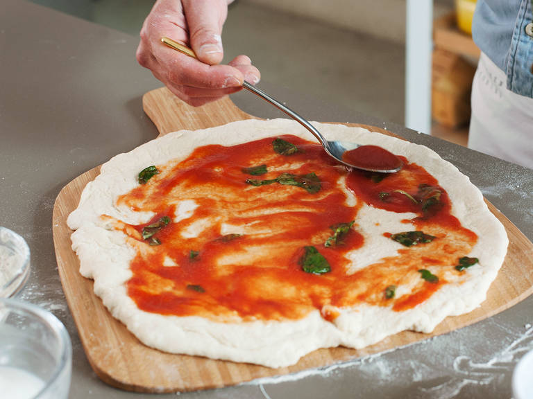
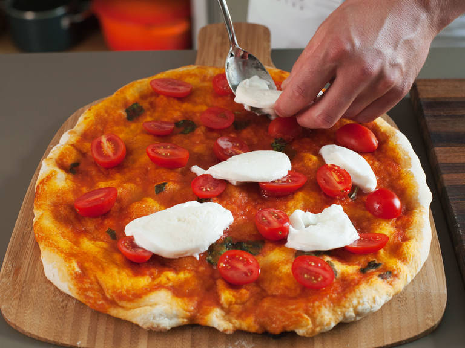

Шаги приготовления:
-

150 мл воды,пол чайные ложки сахара, дрожжи
Добавьте сахар и дрожжи в воду, перемешайте
-

250 грамм муки,пол чайные ложки соли, 1 столовая оливкового масла
В большой миске смешайте вместе муку и соль, а затем добавьте оливковое малсо и воду и перемешайте до однородности
-

Вымешивайте тесто около 15 минут. Затем оставьте на 1-2 часа в теплом, сухом месте
-

Положите пиццу в неразогретую духовку и включите нагрев до 250 градусов
-

Раскатайте тесто до круглой формы и положите на противень
-

150 мл томатного пюре, 1 столовая оливкового масла, пол чайной соли, 10 г базалика
В маленькой миске смешайте вместе томатное пюре, оливковое масло и соль.
Грубо порвите листья базалика и добавьте в соус. Намажьте основу пиццы соусом и поставьте в духовку на 6-7 -

50 г черри, 125 моцарелло
Тем временем нарежьте черри пополам и моцарелло на тонкие кусочки.
Достаньте пиццу из духовки, положите томаты и моцареллу наверх и верните запекаться на 6-7 минут, до тех пор, пока сыр не запечется -
Базилик для украшения
Посыпьте пиццу свежим базиликом. Сбрызните оливковым маслом. Приятного аппетита!